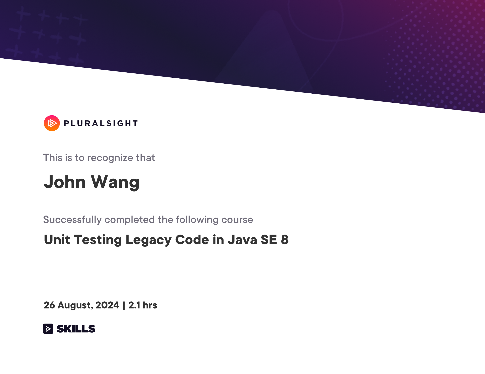
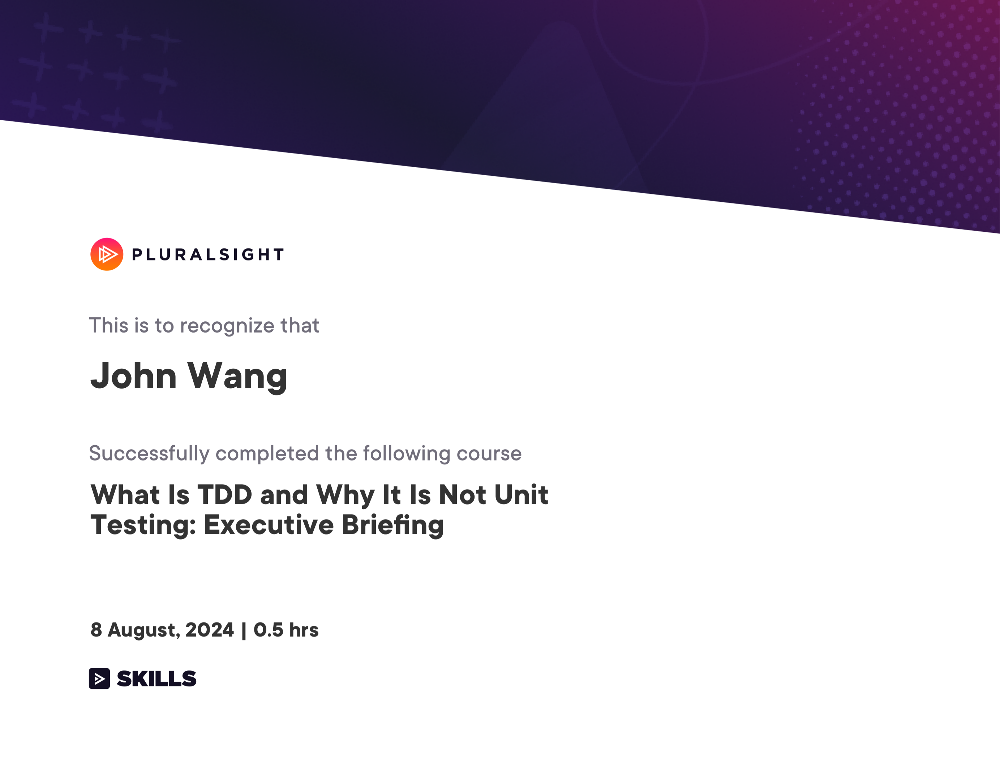
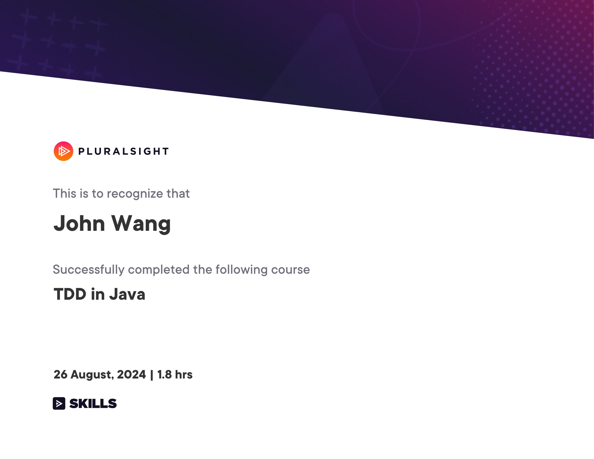
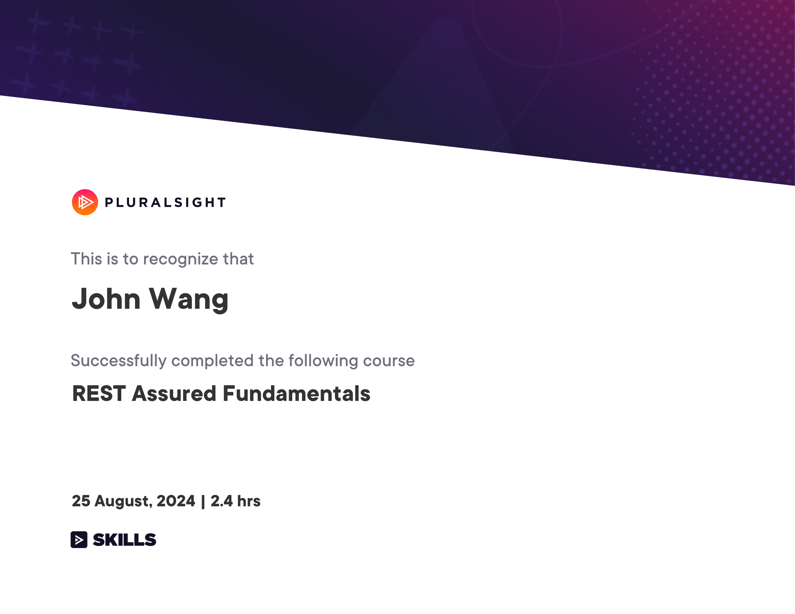
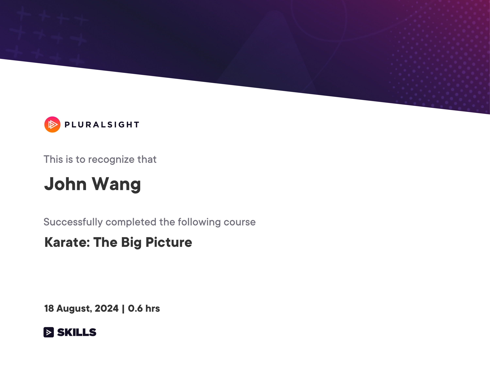

John's Programming: QA Certificates
Unit Testing (1)
Unit Testing Legacy Code in Java SE 8 from Pluralsight by Jim Weaver

Test Driven Development (TDD) (2)
What Is TDD and Why It Is Not Unit Testing: Executive Briefing from Pluralsight by Amy Dredge

TDD in Java from Pluralsight by Andrejs Doronins

REST Assured (1)
REST Assured Fundamentals from Pluralsight by Andrejs Doronins

Karate (1)
Karate: The Big Picture from Pluralsight by Nertil Poci
